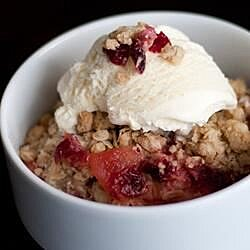

Apple Crisps with Cranberry Sauce

Time to Make a Delicious Apple Cranberry Dessert
Ingredients:
- 4 Granny Smith Apples, peeled, cored , and sliced
- 1 1/2 cup whole berry cranberry sauce
- 1 cup whole wheat pastry flower
- 1 cup rolled oats
- 2/3 cup packed brown sugar
- 2/3 teaspoon ground cinnamon
- 1/2 cup butter, melted
STEPS:
- Preheat the oven to 350 degrees F (175 degrees C).
- Place apple slices in an 8 or 9 inch square baking dish. Spread the cranberry sauce over the apples. In a medium bowl, stir together the flour, oats, brown sugar, cinnamon, and butter until crumbly. Sprinkle over the apples and cranberry sauce, covering completely.
- Bake for 45 minutes in the preheated oven, or until apples can be easily pierced with a knife and topping is browned